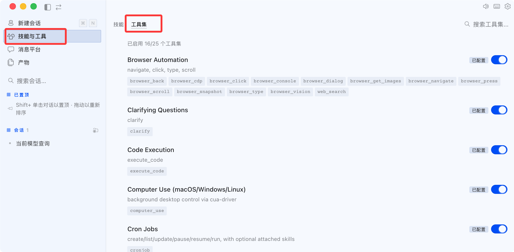

Ecosistema de herramientas de Hermes Agent e integración con MCP
Todas las capacidades de Hermes a través deherramientas (Tools)se exponen al agente.
Las herramientas se organizan enconjuntos de herramientas (Toolsets), y los conjuntos de herramientas se combinan enconfiguraciones de plataforma. Esta estructura de tres capas determina lo que el agente puede hacer en diferentes escenarios:
工具（Tool）
└── 工具集（Toolset） # 相关工具的逻辑分组
└── 平台配置 # 哪个平台加载哪些工具集
└── 自定义工具集 # 你自己定义的组合
Comandos de administración de conjuntos de herramientas
# 打开 curses TUI，按平台开/关工具集 hermes tools # 命令行列出所有工具和状态 hermes tools list # 按名称启用或禁用工具集 hermes tools enable NAME hermes tools disable NAME
En la versión de escritorio, en el menú de habilidades y herramientas de la izquierda:

Al desactivar un conjunto de herramientas, sus herramientas del mensaje del sistemadesaparecen por completo, no solo se deshabilitan: esto ahorra tokens directamente y evita que el agente use indebidamente herramientas que no debería.
Resumen de conjuntos de herramientas integrados
Hermes ofrece más de 70 herramientas integradas, organizadas en 28 conjuntos de herramientas.
A continuación se presentan los conjuntos de herramientas más comunes, clasificados por función.
Archivos y sistema
| Conjunto de herramientas | Herramientas principales | Uso principal |
|---|---|---|
| file | read_file、write_file、list_dir | Lectura/escritura de archivos, operaciones de directorio |
| terminal | run_command、run_script | Ejecución de comandos Shell |
| code | execute_code | Ejecución de código en sandbox (Python/JS/Bash) |
| computer | screenshot、click、type | Automatización de GUI de escritorio |
Red y contenido
| Conjunto de herramientas | Herramientas principales | Uso principal |
|---|---|---|
| web | web_search、web_extract | Búsqueda web y extracción de contenido |
| browser | navigate、click、fill_form | Automatización completa del navegador |
| vision | analyze_image、describe_image | Análisis y descripción de imágenes |
| audio | transcribe、tts | Voz a texto, texto a voz |
Capacidades del agente
| Conjunto de herramientas | Herramientas principales | Uso principal |
|---|---|---|
| memory | memory、session_search | Gestión de memoria y recuperación entre sesiones |
| skills | skills_list、skill_view、skill_manage | Gestión de habilidades |
| delegation | spawn_agent、spawn_parallel | Delegación de subagentes y paralelismo |
| kanban | task_create、task_update | Tablero multiagente (requiere habilitación explícita) |
Creación multimedia
Los siguientes conjuntos de herramientas requieren Nous Portal o la API Key correspondiente:
| Conjunto de herramientas | Función | Descripción |
|---|---|---|
| image_gen | Generación de imágenes a partir de texto | Admite 9 modelos como FLUX, GPT-Image, etc. |
| tts | Texto a voz | 10 proveedores de TTS, incluido Piper local |
Conjuntos de herramientas personalizados
Puedes combinar conjuntos de herramientas existentes en un conjunto de herramientas específico del proyecto en el archivo de configuración:
Ejemplo
# Conjunto de herramientas personalizado: combina conjuntos de herramientas existentes en una configuración específica del proyecto
custom_toolsets:
data-science:
- file
- terminal
- code
- web
Luego especifícalo al iniciar:
Ejemplo
hermes --toolsets data-science
Seis backends de ejecución de terminal
El conjunto de herramientas de terminal admite seis backends de ejecución, que determinandónde se ejecutan los comandos Shell del agente, correspondientes a diferentes niveles de aislamiento y «radio de explosión».
| Backend | Ubicación de ejecución de comandos | Nivel de aislamiento | Escenario típico |
|---|---|---|---|
| local (predeterminado) | Máquina local, permisos del usuario actual | 无 | Desarrollo personal, uso diario |
| docker | Dentro del contenedor Docker | Aislamiento completo | Despliegue en producción, sandbox de seguridad |
| ssh | Servidor remoto | Aislamiento en el límite de la red | Desarrollo remoto, máquinas de alto rendimiento |
| modal | Sandbox en la nube Modal (VM) | Completo (nube) | Computación temporal, tareas de evaluación |
| daytona | Espacio de trabajo gestionado por Daytona | Completo (contenedor en la nube) | Entorno de desarrollo en la nube gestionado |
| singularity | Contenedor Singularity | Aislamiento de espacios de nombres | Clústeres HPC, máquinas compartidas |
Cambiar de backend
Ejemplo
hermes config set terminal.backend docker
# Cambiar al backend SSH
hermes config set terminal.backend ssh
hermes config set terminal.ssh_host user@your-server.com
Ejemplo de configuración completa del backend Docker:
Ejemplo
# Configuración del backend Docker
terminal:
backend: docker
docker_image: "nikolaik/python-nodejs:python3.11-nodejs20"
container_persistent: true # true = montaje enlazado, false = tmpfs temporal
Principio de seguridad: el backend local otorga al agente los mismos permisos de sistema de archivos que tú; es adecuado para máquinas personales, no para servicios de producción. El backend docker es la forma más simple y efectiva de aislamiento.
Aprobación de comandos peligrosos
Por defecto, Hermes solicita confirmación antes de ejecutar comandos potencialmente destructivos:
Ejemplo
# Configuración del modo de aprobación
approvals:
mode: manual # manual (predeterminado) | smart | off
timeout: 60 # Segundos de espera para la aprobación
cron_mode: deny # Comportamiento cuando una tarea programada encuentra un comando peligroso: deny | approve
Omitir temporalmente la aprobación en una sesión (usar con precaución):
Ejemplo
/yolo
# Vuelve a ingresar para desactivar
/yolo
MCP: Conexión con el ecosistema de herramientas externas
MCP (Model Context Protocol) permite a Hermes conectarse a servidores de herramientas externos sin modificar el código central: GitHub, bases de datos, sistemas de archivos, pilas de navegador, API internas, etc.
La instalación estándar ya incluye soporte para MCP, sin pasos adicionales.
Dos tipos de servidores MCP
Servidor local stdio: se ejecuta localmente como un subproceso y se comunica a través de la entrada/salida estándar:
Ejemplo
# Configuración del servidor MCP stdio
mcp_servers:
github:
command: "npx"
args: ["-y", "@modelcontextprotocol/server-github"]
env:
GITHUB_PERSONAL_ACCESS_TOKEN: "ghp_..."
filesystem:
command: "npx"
args: ["-y", "@modelcontextprotocol/server-filesystem", "/home/user/projects"]
git:
command: "uvx"
args: ["mcp-server-git", "--repository", "/home/user/project"]
Caso de uso: las herramientas están instaladas localmente y se necesita acceso de baja latencia a recursos locales.
Servidor HTTP remoto: conéctate directamente al endpoint MCP remoto:
Ejemplo
# Configuración del servidor MCP HTTP
mcp_servers:
# Autenticación con Bearer Token estático
internal_api:
url: "https://mcp.internal.example.com/mcp"
headers:
Authorization: "Bearer ${MY_TOKEN}"
# Autenticación OAuth 2.1 (Linear, Sentry, Figma, Stripe, etc.)
linear:
url: "https://mcp.linear.app/mcp"
auth: oauth
# Proveedores que requieren registro previo del cliente OAuth
googledrive:
url: "https://drivemcp.googleapis.com/mcp/v1"
auth: oauth
oauth:
client_id: "<your-oauth-client-id>"
client_secret: "<your-oauth-client-secret>"
Caso de uso: las herramientas están alojadas de forma remota, o la organización dispone de una interfaz MCP interna.
Catálogo MCP seleccionado por Nous
Hermes incorpora un catálogo de MCP auditado por Nous, instalable con un clic:
Ejemplo
hermes mcp
# Lista de texto sin formato
hermes mcp catalog
# Instalar entradas del catálogo por nombre
hermes mcp install n8n
El selector muestra el estado actual de cada entrada:
n8n available 管理和检查 n8n 工作流 linear enabled Linear 问题/项目管理（远程 OAuth） github installed (disabled) GitHub 仓库 + PR 工具
La instalación completa automáticamente tres pasos:
- Solicita configurar la API Key o guía el inicio de sesión OAuth
- Detecta la lista de herramientas expuestas por el servidor
- Muestra una lista de selección de herramientas para que decidas cuáles activar
Filtrado de herramientas: expón solo lo que necesitas
Cada servidor MCP admite un filtrado fino de herramientas, reduciendo la superficie de ataque disponible para el Agente:
Ejemplo
# Configuración de filtrado de herramientas MCP
mcp_servers:
github:
command: "npx"
args: ["-y", "@modelcontextprotocol/server-github"]
env:
GITHUB_PERSONAL_ACCESS_TOKEN: "ghp_..."
tools:
include: [list_issues, create_issue, update_issue, search_code]
# Las herramientas no listadas no se registrarán
resources: false
prompts: false
stripe:
url: "https://mcp.stripe.com"
headers:
Authorization: "Bearer ${STRIPE_KEY}"
tools:
exclude: [delete_customer, refund_payment] # Excluir operaciones de alto riesgo
| Campo | Comportamiento |
|---|---|
| tools.include | Solo registra las herramientas de la lista; el resto se excluye por completo |
| tools.exclude | Excluye las herramientas de la lista; el resto se registra por completo |
| Ambos configurados | include tiene prioridad |
| resources: false | No exponer herramientas de acceso a recursos MCP |
| prompts: false | No exponer herramientas de prompts MCP |
Las reglas de filtrado usan los nombres originales de las herramientas MCP (con guiones/puntos), no las versiones con guiones bajos registradas por Hermes.
Cada servidor MCP genera un conjunto de herramientas independiente
Después de configurar el servidor MCP de github, Hermes crea automáticamente elmcp-githubconjunto de herramientas en tiempo de ejecución.
Puedes gestionarlo igual que los conjuntos de herramientas integrados:
Ejemplo
# Hacer referencia al conjunto de herramientas MCP en la configuración de la plataforma
platform_toolsets:
cli:
- hermes-cli
- mcp-github
- mcp-linear
Recargar la configuración de MCP
Tras modificar config.yaml, no es necesario reiniciar todo el Agente:
Ejemplo
/reload-mcp
# O desde la línea de comandos
hermes mcp reload
Si se requiere completar la autenticación OAuth, el timeout de 30 segundos no es suficiente. Se recomienda añadir primero la configuración del servidor y luego ejecutar hermes mcp login <server> en una nueva terminal para completar la autorización (tiempo máximo de espera de 5 minutos).
Integración con editores (ACP)
ACP (Agent Communication Protocol) permite que Hermes se ejecute de forma nativa dentro del editor — chat, actividad de herramientas, diferencias de archivos y comandos de terminal se renderizan directamente en el editor.
Editores compatibles: VS Code, Zed y toda la gama JetBrains.
La instalación estándar ya incluye soporte ACP:
Ejemplo
hermes acp
Si la instalación no incluyó las dependencias completas:
Ejemplo
cd ~/.hermes/hermes-agent
uv pip install -e ".[acp]"
| Editor | Método de integración | Funciones |
|---|---|---|
| VS Code | Extensión/plugin | Autocompletado de código en línea, revisión de código, sugerencias de refactorización |
| Zed | Modo Agente nativo | Comunicación stdio/JSON-RPC, conciencia del contexto |
| JetBrains | Plugin | Generación de código, generación de pruebas, comentarios de documentación |
La integración con el editor utiliza el protocolo stdio/JSON-RPC para comunicarse con el Agente Hermes, sin depender de conexión de red, adecuado para uso sin conexión.
Modo de voz
El modo de voz admite interacción de voz completa entre CLI y plataformas de mensajería:
- Entrada de micrófono con grabación (reconocimiento de voz local faster-whisper, gratuito)
- Respuestas de voz TTS (10 proveedores disponibles)
- Conversación en tiempo real en canales de voz de Discord
Instalación y activación
Ejemplo
cd ~/.hermes/hermes-agent
uv pip install -e ".[voice]"
Ejemplo
/voice on
# Pulsa Ctrl+B para empezar a grabar, suelta para enviar
# En plataformas de mensajería
/voice on # Activar respuestas TTS
/voice tts # Solo activar texto a voz (sin entrada de voz)
/voice off # Desactivar
Proveedores de TTS
| Proveedor | Características | ¿Gratuito? |
|---|---|---|
| Edge TTS | Voz neuronal de Microsoft, multilingüe | Gratuito |
| Piper | Totalmente local, baja latencia | Gratuito |
| OpenAI TTS | Alta calidad, múltiples tonos de voz | Pago por uso |
| ElevenLabs | Calidad de sonido superior, clonación de voz | Pago por uso |
| MiniMax | Optimizado para chino | Pago por uso |
| Mistral Voxtral | Multilingüe | Pago por uso |
Tool Gateway (suscripción a Nous Portal)
Mediante la suscripción a Nous Portal, obtén con un clic implementaciones en la nube de cuatro tipos de herramientas, sin necesidad de solicitar API Keys por separado:
| Herramienta | Descripción |
|---|---|
| Búsqueda web | Búsqueda + extracción de contenido (conjunto de herramientas web) |
| Generación de imágenes | 9 modelos: FLUX, GPT-Image, Ideogram, etc. |
| TTS | Texto a voz |
| Navegador en la nube | Automatización completa del navegador (sin necesidad de Playwright local) |
Ejemplo
hermes setup --portal
Seguridad de herramientas: aislamiento de variables de entorno en MCP
Los subprocesos stdio de MCP reciben unentorno filtrado, evitando fugas accidentales de credenciales.
De forma predeterminada, solo se pasan las siguientes variables al proceso MCP:
PATH, HOME, USER, LANG, LC_ALL, TERM, SHELL, TMPDIR（以及所有 XDG_* 变量）
Todas las demás variables de entorno (API Keys, tokens, contraseñas) están bloqueadas.
Solo se pasan las variables declaradas explícitamente en el bloque env: de la configuración del servidor MCP:
Ejemplo
# Solo las variables declaradas explícitamente se pasan al subproceso MCP
mcp_servers:
github:
command: "npx"
args: ["-y", "@modelcontextprotocol/server-github"]
env:
GITHUB_PERSONAL_ACCESS_TOKEN: "ghp_..." # Solo esta se pasa
Además, los mensajes de error de las herramientas MCP se desinfectan automáticamente antes de devolverse al LLM, reemplazando la información sensible con[REDACTED]。
Referencia rápida de comandos comunes
Ejemplo
hermes tools # Gestión interactiva de conjuntos de herramientas (TUI)
hermes tools list # Listar todas las herramientas y estados
hermes tools enable NAME # Habilitar conjunto de herramientas
hermes tools disable NAME # Deshabilitar conjunto de herramientas
# ─── Gestión de MCP ────────────────────────────────────────────────
hermes mcp # Selector interactivo del catálogo MCP
hermes mcp catalog # Lista del catálogo en texto plano
hermes mcp install <name> # Instalar entradas del catálogo
hermes mcp add NAME --command CMD # Añadir servidor MCP manualmente
hermes mcp remove NAME # Eliminar servidor MCP
hermes mcp list # Listar servidores configurados
hermes mcp test NAME # Probar conexión
hermes mcp login <server> # Completar autorización OAuth
hermes mcp configure <server> # Reconfigurar selección de herramientas
hermes mcp reload # Recargar configuración de MCP
# ─── Backend de terminal ────────────────────────────────────────────────
hermes config set terminal.backend docker
hermes config set terminal.backend ssh
hermes config set terminal.ssh_host user@host
# ─── Integración con editor ACP ──────────────────────────────────────────
hermes acp
# ─── Suscripción a Portal ─────────────────────────────────────────────
hermes setup --portal
Haz clic para compartir notas
<p style="font-size:14px;">¡Las notas deben ser una extensión del contenido de este artículo!</p><br> <p style="font-size:12px;"><a href="../tougao.html" target="_blank">Para enviar un artículo, haga clic aquí</a></p> <p style="font-size:14px;"><a href="../w3cnote/runoob-user-test-intro.html" target="_blank">Cómo obtener el código de invitación de registro</a></p> <h3 class="text-muted"><i class="fa fa-info-circle" aria-hidden="true"></i> Antes de compartir notas, debe <a href=";.html" class="runoob-pop">iniciar sesión</a>.</h3> <p><a href="../w3cnote/runoob-user-test-intro.html" target="_blank">Cómo obtener el código de invitación de registro</a></p>